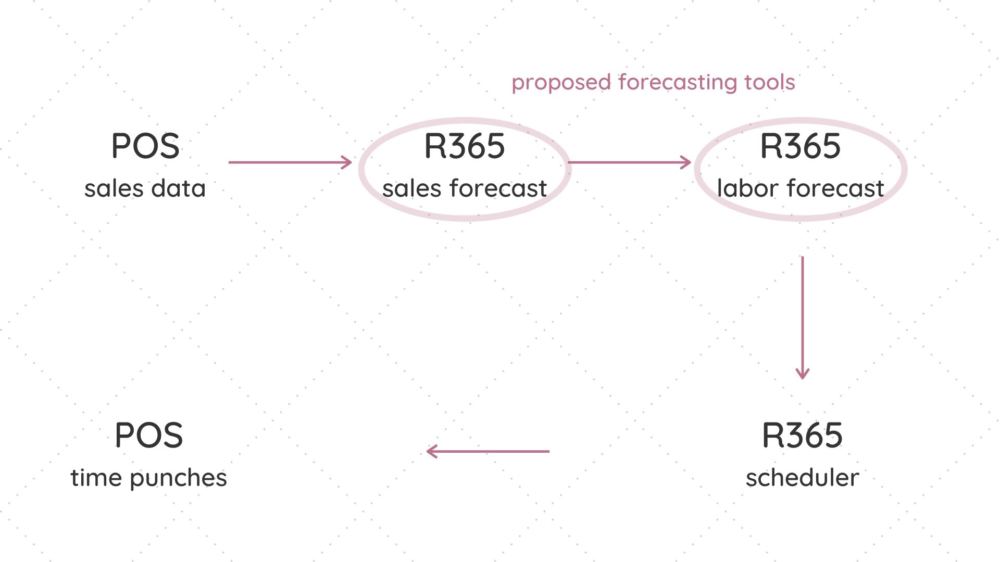
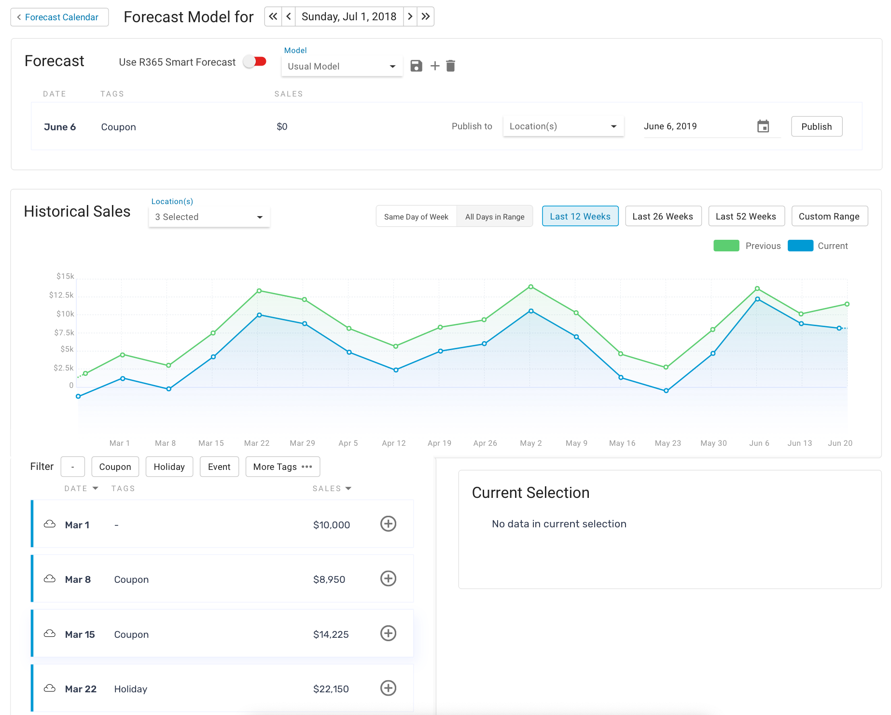
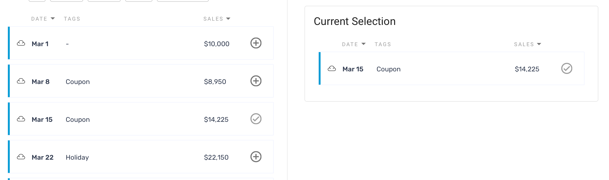
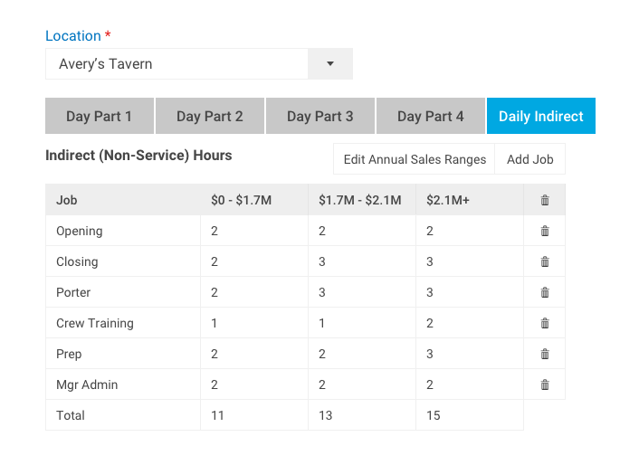
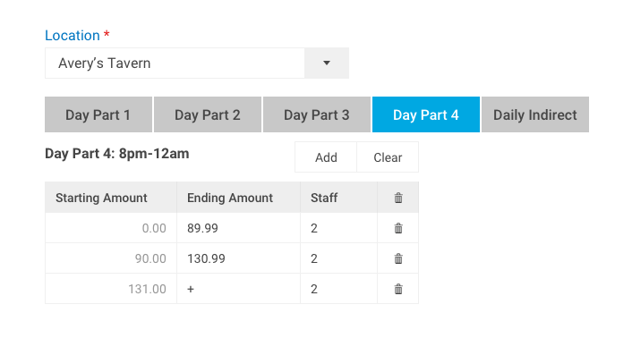
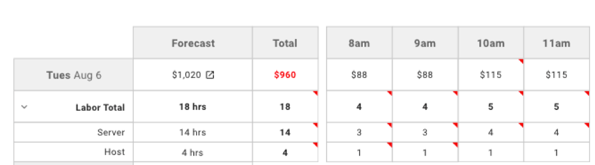
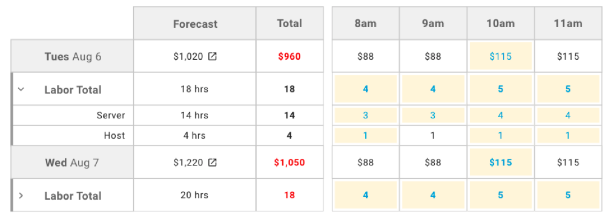
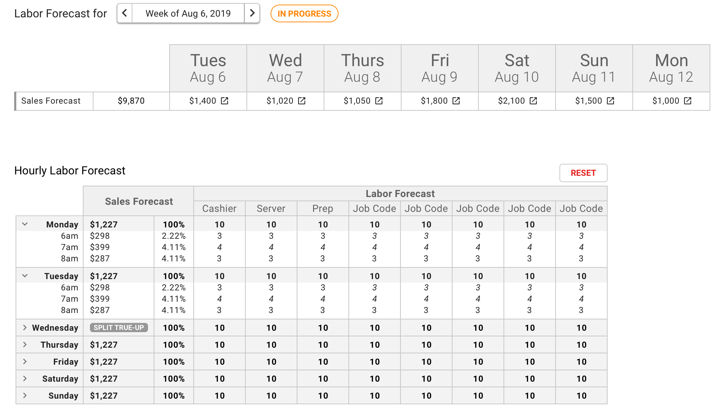
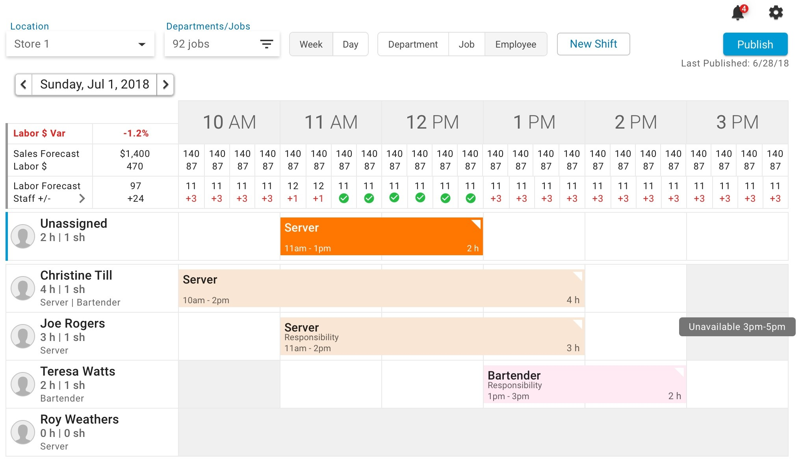
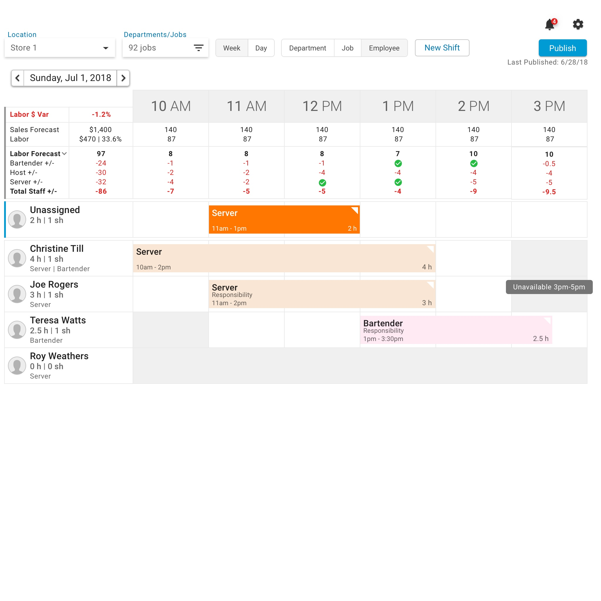

Restaurant365 wanted to continue to augment its existing operations software with relevant features. Since R365 integrated with restaurants' point-of-sale systems ("POS"), we already had access to restaurants' historical sales data. The product owner knew we could provide restaurant managers with a method to leverage this historical data - operations forecasting tools. We dubbed it our "smart scheduling system", where managers could forecast hourly labor needs based on past sales and anticipated events.
Objective:
The ultimate goal was to deliver a smart scheduling system - a powerful tool to predict demand, inflows of customers, and labor costs.
Process
While a forecast based on historical data won't provide perfectly accurate results, it would give managers valuable insights, helping them make essential decisions regarding how to allocate their labor resources. I started with ideating and sketching for this smart scheduling system.

The smart scheduling system would generate predictions based on past sales and anticipated events. It would allow upper-level management to create forecasts of their stores' sales based on past sales and upcoming events; leverage projected sales data to forecast their labor needs on a weekly basis; and enable managers to use their expertise to staff their restaurant.
Sales Forecast
As an accounting/operations software, R365 integrated with customers' POS to access information like a restaurant's past sales. Sales Forecast would display the total sales amounts for each day - both prior year and current year. This was a valuable point of reference for forecasts, so that managers could identify shifts in sales over time.
Managers would create their sales forecasts by selecting data points of sales to be averaged out. By default, our system would select the last 8 weeks of data and drop the minimum and maximum amounts before generating the average.
I understood that managers might have difficulty conceptualizing this data and how it related to their restaurant, so I designed the sales forecast to include a sales over time graph.
Sales Forecast, developed in React
I included the following in my design:
A way for managers to add context to each day's sales. Any particular day might have a coupon, special promotion, and/or an event - which in turn would impact sales. Early wireframes allowed managers to 'flag' certain weeks, but testing revealed that this was insufficient without descriptor text explaining why a week was flagged. I ended up incorporating tags.
Weather information, which was important for restaurant locations dealing with snow or other extreme conditions.
A legend, to differentiate the previous year's sales from the current year's.
I also designed different states for each Historical Sales data point, to clarify what actions a user could take. Data points that were available for selection were indicated with a "+" icon. Ones that had already been selected were indicated with a gray checkmark. This checkmark icon would turn into a "-" sign upon hover, to indicate that a user could remove it by clicking.

Labor Forecast
Labor Forecast allowed store and district managers to use their forecasted sales to create labor projections for future weeks. Labor calculations are not always linear, so this required a three-pronged approach:
A matrix for admins/managers to designate how many employees their location required at any given time or sales volume
A weekly breakdown of labor forecast, using projections from our custom sales forecast tool
Updating the Scheduling web app to include each week's projected labor hours
Building the Matrix
Restaurant managers needed to consider different types of labor hours:
Variable Labor: Servers, hosts, or cooks; hours depended on estimated sales.
Fixed Labor: Managerial staff or maintenance. Managers knew exactly how many hours were needed and on what days of the week.
The idea was to create a matrix, where a user could designate each scheduleable job code as either variable or fixed labor and input how many hours of labor were necessary for each. My hope was that users would only need to build the matrix once, so my first wireframes for the labor setup matrix showcased a form wizard (step-by-step setup assistant) for users to complete this process.
We moved away from the form wizard idea as we spoke to more users and learned that they would need to update the matrix whenever they created new job codes. We also received feedback that our user base was comfortable with keyboard shortcuts and preferred to use the tab key rather than move their mouse around and click precise buttons. With this in mind, I moved towards a grid format for the matrix.
 
Updating the Forecast
The next step for users going through the smart scheduling process was to visualize the results of that matrix, according to their projected sales for the week.
We wanted users to understand that while they could rely on the system's default forecast, we would always defer to their knowledge. If they wanted to revert back to the default forecast, they could reset everything. With this in mind, we handed them the ability to edit this forecast.
Administrators could "smooth out" their sales and labor forecast so there weren't sudden jumps between hours. For example, it would be unwise for a manager to schedule 4 employees for one hour, 7 employees the next, and back to 4 the third hour.
I ideated with the product owner on ways to visualize changes made by the user.
A variant where updated cells were automatically flagged with redA variant where updated cells were highlighted in yellow and font color changed to blue
I puzzled over these options, wanting to make the changes slight enough that the user could easily identify the difference, but not so loud as to concern them that something had necessarily gone wrong. Another question was how to visually indicate that a user couldn't edit something - like a total or fixed value. I figured these would most easily be accomplished through text style changes, rather than colors that might not have the desired significance to an operations manager. I ended up representing updated cells using italics, and fixed values with bold.

Visibility on Web Scheduler
The addition of Custom Labor Forecast meant we needed to make some tweaks to our Scheduling web application. Variable Labor hours would need to be indicated on the schedule, so that scheduling managers would know if they'd scheduled the appropriate number of hours for each job. I explored different ways to flag these time intervals.
I first started by including all of the quantitative metrics: projected hours, scheduled hours, and the variances. One idea was to add a status icon to indicate a variance, or lack thereof. This was appealed to the minimalist in me - a visual indicator for completion and saved the user from having to do unnecessary mental math. My final version was even more streamlined:
Forecasted labor hours and the labor variance for each hour. I left out the redundant "scheduled hours" metric entirely.
Time intervals needing attention listed the labor hour variance in red.
Correctly scheduled time intervals were marked with a green checkmark.


Managers would still need to review their work and determine how much labor they truly needed throughout the day. Since actual sales won't necessarily line up with each day's sales forecast, it naturally follows that projected labor generated by the labor matrix won't be exact. Managers instead will need to adjust to optimize their labor throughout the day.
Validation
We received positive feedback when demoing the forecasting prototypes with users. Labor Forecast in particular landed well with them. Once it was ready for rollout to our customers, we witnessed an adoption rate of 200 accounts, with at least 5 customers publishing a week's worth of forecasting data to multiple locations at a time.
Reflection and next steps
Working on operations forecasting was an interesting look at a manager's processes. I enjoyed the idea of helping restaurant managers get the most out of the data available to them. While it is a helpful tool for managers, it should still be where only a percentage of their time is spent. Projections can help, but the important thing is for them to use the tool quickly and return to their other duties.
Details
ContextOperations project for R365, for restaurants to optimize their labor spend and streamline the scheduling process
{kind=link}
{kind=link}